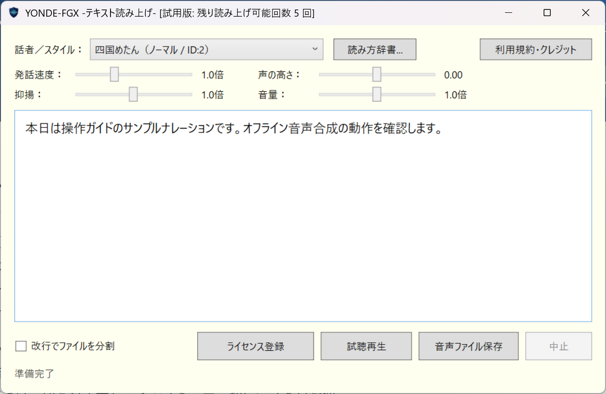
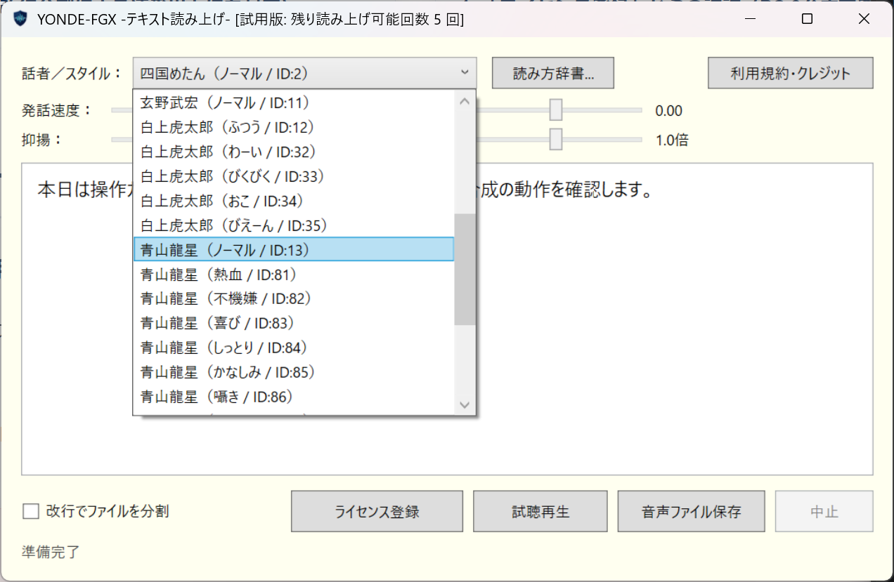
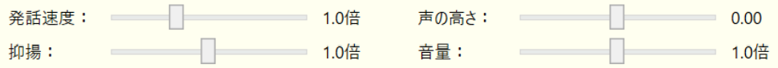
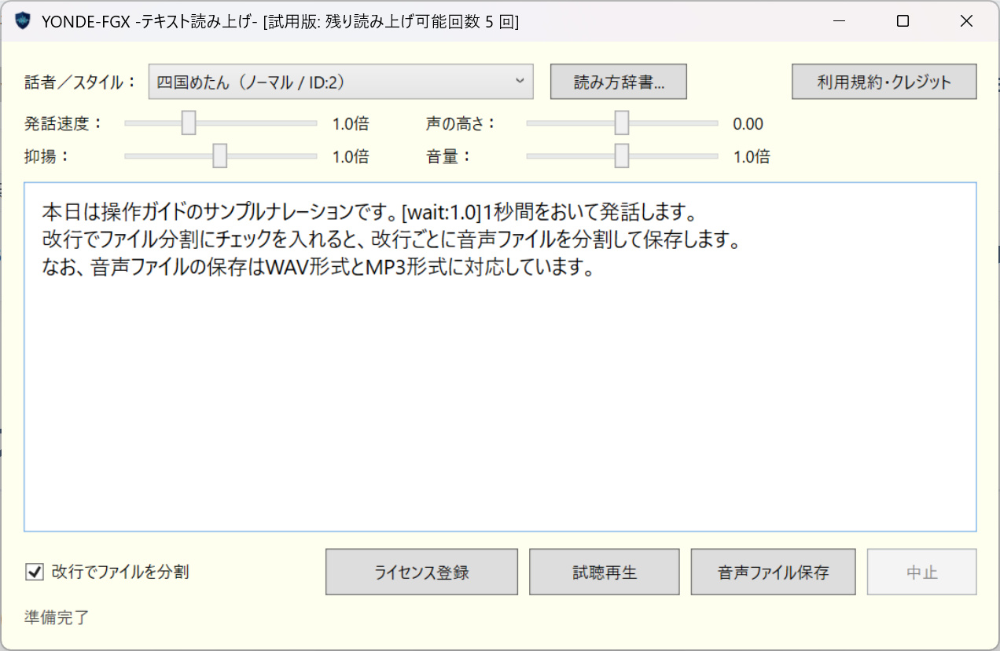
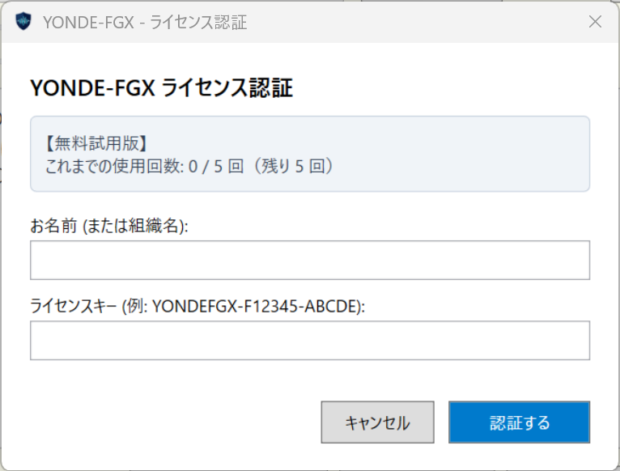

YONDE-FGX（Your Offline Narration & Dictation Engine）は、音声合成エンジンおよび音声モデルを活用し、社外秘の原稿や外部へ流出したくないテキストからも安全に日本語ナレーション音声ファイルを生成できる、完全ローカル完結型のデスクトップアプリケーションです。
テキスト解析から音声合成、WAV / MP3 ファイル出力まですべてお使いの PC 内で完結するため、入力した文章や音声データが外部のサーバーへ送信されることは一切ありません。インストーラーやレジストリを使用しないポータブル構成を採用しており、ZIP ファイルを解凍して YONDE-FGX.exe を起動するだけですぐにご利用いただけます。

読み上げ解析から音声合成、ファイル保存までをすべてローカル PC 内で処理します。未公開の企画書・マニュアル・社内教育資料など、外部クラウドへ送信したくない原稿でも安心してナレーション化できます。
話者やスタイル（トーン）の選択に加え、発話速度・声の高さ・抑揚・音量をスライダーで直感的に調整可能。解説動画・社内アナウンス・教材など、用途に応じた聞き取りやすい音声を作成できます。
[wait:秒数] タグによる自由な無音区間挿入テキスト内に [wait:1.0] のように定型タグを記述することで、任意の箇所に指定秒数の無音区間（間・ポーズ）を挿入できます。句読点だけでは調整しきれないナレーションの「間」を思い通りにコントロールできます。
複数行にわたる長い原稿も、改行単位で自動分割して連番ファイル（_000、_001 …）として一括生成できます。動画編集ソフトへの取り込みやスライドごとの音声差し替え作業を大幅に効率化します。
固有名詞や専門用語の読み方を登録・置換できる辞書機能を備え、保存前に試聴再生でイントネーションや間をすぐ確認できます。再生・生成処理の途中中止にも対応しています。
非圧縮の WAV と扱いやすい MP3 の両形式での出力に対応。レジストリを使用せず ZIP 解凍のみで動作するため、環境を汚さず手軽に管理できます。
[wait:1.0] などの指定秒数に合わせてポーズを挿入し、聞き取りやすいリズムを作れます。原稿の入力と音声調整から、試聴再生、WAV / MP3 ファイル保存までのシンプルな流れ




本ソフトウェアはインストーラーおよびレジストリを使用しない ZIP 配布形式を採用しています。
YONDE-FGX.exe をダブルクリックして起動します（必要に応じてデスクトップ等へショートカットを作成してください）。YONDE-FGX.exe と同梱の DLL・辞書・音声モデルフォルダ（VoiceAssets 等）は、必ず同じ階層構成のまま解凍してください。ファイル単体で別の場所へ移動すると正常に起動・音声合成ができなくなります。D:\Tools\YONDE-FGX など書き込み可能なフォルダへ解凍するとそのまま手軽にご利用いただけます。C:\Program Files などの書き込み制限があるフォルダに配置する場合は、解凍したフォルダを右クリック ＞ 「プロパティ」 ＞ 「セキュリティ」 タブ ＞ 「編集」 から Users の 「書き込み」を「許可」 してください。YONDE-FGX.exe を終了します。VOICEVOX:四国めたん 等）を必ず遵守してください。本ソフトウェアはシェアウェアです。インストール後、無料試用枠【5回】まで機能をお試しいただけます。
試用中または上限回数に達した後は、画面下部の 「ライセンス登録」 ボタンから「YONDE-FGX ライセンス認証」ダイアログを開き、お名前（または組織名）と正規ライセンスキー（1ライセンスにつき、同一所有者の PC 3台まで登録可能）を入力して認証することで、引き続き無制限にご利用いただけます。
1. 音声合成の読み上げ精度について: 本ソフトウェアは音声合成エンジンおよび辞書による自動解析を行いますが、すべての漢字・固有名詞・記号の正確な読み上げを 100% 保証するものではありません。必要に応じて辞書機能やひらがな表記等で調整のうえご利用ください。
2. 生成音声の権利および規約遵守について: 生成された音声ファイルを公開・配信・商用利用する際は、必ず使用した各音声モデル（キャラクター）の利用規約およびクレジット表記ルールを確認し、利用者の責任において遵守してください。規約違反等に起因するトラブルについて、制作者は一切の責任を負いません。
3. 損害に対する責任の否定: 本ソフトウェアの使用、または使用不能から生じるいかなる損害（業務の中断、データの逸失、金銭的損害、その他の経済的損失等）についても、制作者は一切の責任を負わないものとします。
4. 動作保証および個別サポート: 本ソフトウェアは「現状のまま（As-Is）」で提供されます。すべての PC 環境での動作を保証するものではなく、個別の問い合わせに対する動作保証や個別チューニングの義務を負いません。
5. 禁止事項: 本ソフトウェアの無断転載・再配布・二次配布、およびリバースエンジニアリング（逆コンパイル・逆アセンブル等）を禁じます。
6. 仕様変更: 本ソフトウェアの機能、仕様、および付属ドキュメントの内容は、予告なく変更される場合があります。
本ソフトウェアの著作権は Feature GateX に帰属します。使用されている各種音声合成エンジン・音声モデル・オープンソースライブラリの権利は各権利者に帰属します（詳細はアプリ内の規約・クレジット画面または同梱の THIRD_PARTY_LICENSES.txt をご確認ください）。
開発・制作者: Feature GateX ／ 連絡先メール: featuregatex@gmail.com
まずは無料試用版（5回まで）で、ローカル完結の日本語ナレーション生成をお試しください。
YONDE-FGX.exe と同梱フォルダ（VoiceAssets 等）の階層構造を崩さずすべて展開してください。また、生成音声を公開・商用利用する際は、使用した音声モデルの利用規約およびクレジット表記ルールをご確認ください。